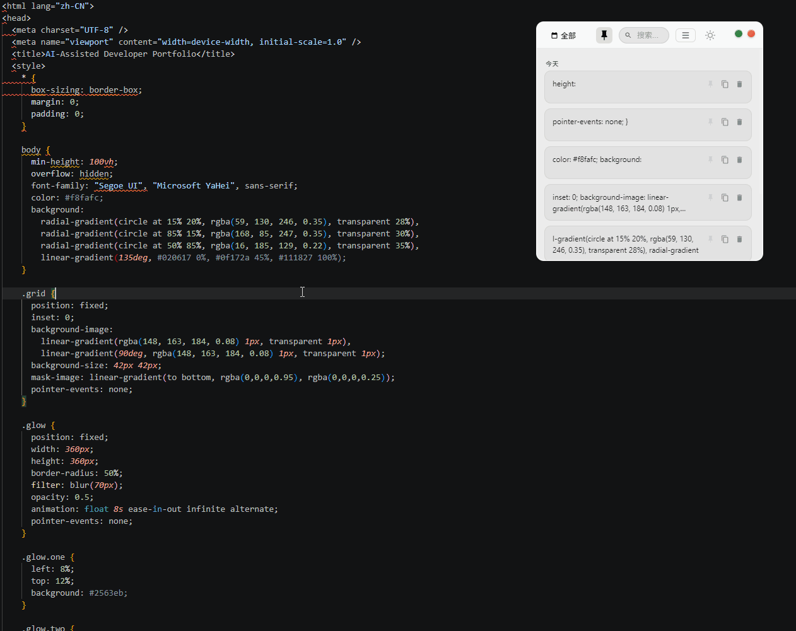

Clippin
Windows 剪贴板管理工具
自动记录剪贴板内容，支持类型识别、历史搜索、置顶管理、导出文档和桌面端打包发布。
- Electron
- HTML/CSS/JS
- sql.js
- clipboard-event
- pdfkit
- electron-builder
解决的问题：频繁复制文本、链接、代码片段时，系统剪贴板只能保留最近一次内容，难以追踪、搜索和复用。
项目亮点：打通了从产品构思、功能设计、桌面端开发、Windows 打包发布到 GitHub 开源的完整流程，项目具备可安装、可使用、可审阅的交付形态。